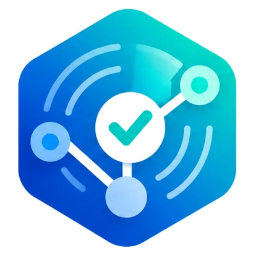
This manual explains every screen and option in NetCheck, from signing in for the first time to sharing out permissions between teams. You do not need to know anything about networks or Kubernetes: each technical term is explained the first time it appears, and it is also in the glossary at the end.
| Part | What you will find | Read it if… |
|---|---|---|
| I. Getting started | What NetCheck is, basic concepts, how to sign in and how to find your way around the screen | You are using NetCheck for the first time |
| II. Using NetCheck | Creating tests, reading the results, the history, tokens and your proxies | You want to understand what users do (an administrator is a user too) |
| III. Administration | Every page of the Administration menu, option by option | You manage users, permissions or the configuration |
| IV. How-to guides and operations | Recipes for common tasks, tasks that need cluster access, troubleshooting, glossary and limits | You have a specific task or something is not working |
nc-allow.alice.smith or carol.white, namespaces such as nc-allow or nc-open).
In your installation you will see your own names, but the screens and buttons are the same.What NetCheck is, the words you are going to read, how to sign in and how the screen is laid out.
NetCheck is a web tool that answers one very specific question: “from this place in our Kubernetes cluster, can we reach this destination?”.
Picture an office building with many rooms (in Kubernetes, each room would be a namespace). Each room has its own rules about which outside doors it may knock on. When an application fails because it “cannot reach” a database or an API, the first thing to find out is whether the problem is in the network (the room is not allowed to knock on that door) or in the application itself.
To find out, NetCheck does the following each time someone runs a test:
| Profile | What they do in NetCheck |
|---|---|
| User | Runs tests from the namespaces assigned to them and looks at their results. |
| Administrator | Everything above in all namespaces, and also manages users, groups, roles, access rules and all the configuration. |
| Custom role | Whatever the administrator decides: for example, only some tests or some administration pages (chapter 15). |
| Platform team | Installs and upgrades NetCheck in the cluster with Helm. Some tasks can only be done from there (chapter 28). |
These are the words you will see most often. You do not need to learn them by heart: come back to this page whenever you need to. There is a fuller list in the glossary.
| Term | What it means, in plain words |
|---|---|
| Kubernetes | The platform where the company's applications run. NetCheck lives inside it. |
| Cluster | A set of servers managed together by Kubernetes. |
| Namespace | A separate space inside the cluster, usually one per application or per team (payments, orders…). Tests are run from a namespace. |
| Pod | The smallest unit that runs an application in Kubernetes. The NetCheck probe is a temporary Pod. |
| Probe | The temporary Pod NetCheck creates to take measurements and deletes when it finishes. |
| NetworkPolicy | A Kubernetes network rule that says which destinations a namespace can (or cannot) connect to. It is the most common cause of blocks. |
| Destination | What you want to reach: a name (api.example.com) or an IP address (10.20.30.40). |
| Port | The “door number” of the service at the destination. For example, 443 for secure websites or 5432 for PostgreSQL. |
| DNS | The system that turns names into IP addresses, like a phone book. |
| TCP / UDP | The two basic ways of sending data over the network. TCP sets up a connection (like a phone call); UDP sends separate messages (like letters). |
| HTTP / HTTPS | The protocol of web pages and APIs. HTTPS is the encrypted version and uses certificates. |
| Ping / traceroute | Ping checks whether a machine answers; traceroute shows the hops (routers) the traffic passes through. Many networks filter them even when everything else works. |
| Proxy | A go-between that the company makes some outgoing traffic pass through. |
| Certificate / certificate authority (CA) | The certificate proves the identity of an HTTPS server; the authority is who signs it. NetCheck trusts the public ones and the ones you add. |
| CIDR | A way of writing a range of IP addresses: 10.0.0.0/8 means all the ones that start with 10. |
| SSO (single sign-on) | Signing in with your company account (Microsoft, Google, GitHub…) instead of a NetCheck password. |
| Role | A set of permissions (what you can do). There are two built-in ones, User and Administrator, and you can create others. |
| Group | A set of people who get a role together in some namespaces. |
| API token | A key that lets a program (for example, a deployment pipeline) run tests on behalf of a person. |
| Helm | The tool the platform team uses to install and upgrade NetCheck in the cluster. |
Open in your browser the address the platform team gave you (for example https://netcheck.yourcompany.com).
You will see the sign-in page:
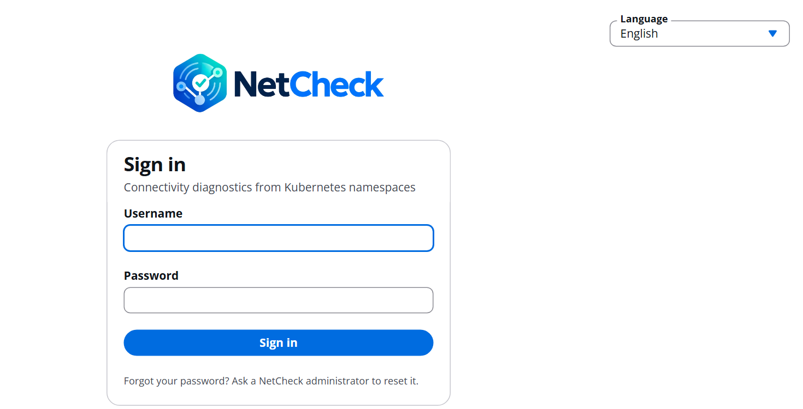
The first time you sign in, or after an administrator resets your password, you sign in with a temporary password. NetCheck asks you to change it before you do anything else.
coffee-at-eight-no-sugar) is
safer than a short word with odd symbols.When NetCheck is installed, an admin account is created with a random password. The platform team gets it from the
cluster (chapter 28) and hands it to you over a secure channel. You use it to sign in for the first time, change it, and from then on you can
create the other users. It is good practice to create personal accounts for each administrator and not to share the
admin account.
NetCheck uses the same layout as the AWS console. You will always see these parts:
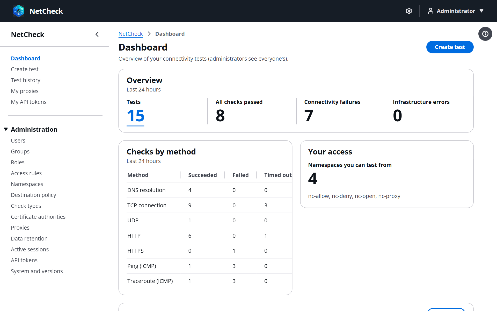
| Area | What it is for |
|---|---|
| Top bar | The logo (takes you back to the start), the preferences button (gear wheel) and your name, which opens the user menu. |
| Side menu | Dashboard, Create test, Test history, My proxies, My API tokens and, if you are an administrator, the Administration section. You can fold it away with the ‹ arrow. |
| Breadcrumbs | The line above the title (for example NetCheck › Administration › Users). Each part is a link to go back. |
| Help panel | The ⓘ icon on the right, or the Info link next to some titles, opens a summary of how to read the results. |
Click your name in the top bar. The first line shows your username, your role and the NetCheck version. Below it:
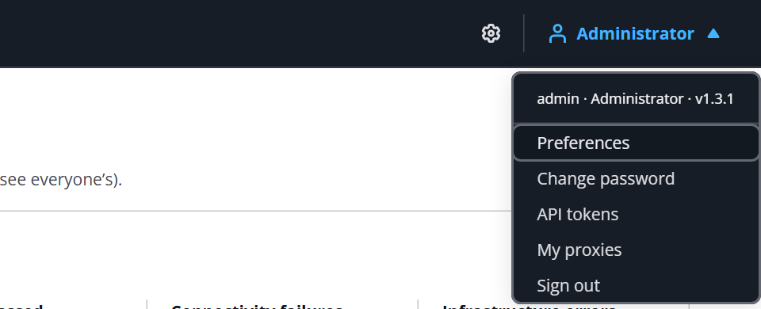
| Option | What it does |
|---|---|
| Preferences | Choose the interface language. |
| Change password | Change your password. It does not appear for SSO accounts. |
| API tokens | Your tokens for the command line (chapter 10). |
| My proxies | Your personal proxies (chapter 11). It only appears if your role allows it. |
| Sign out | Leave NetCheck in this browser. |
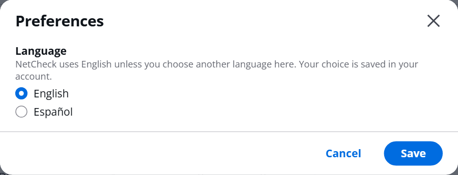
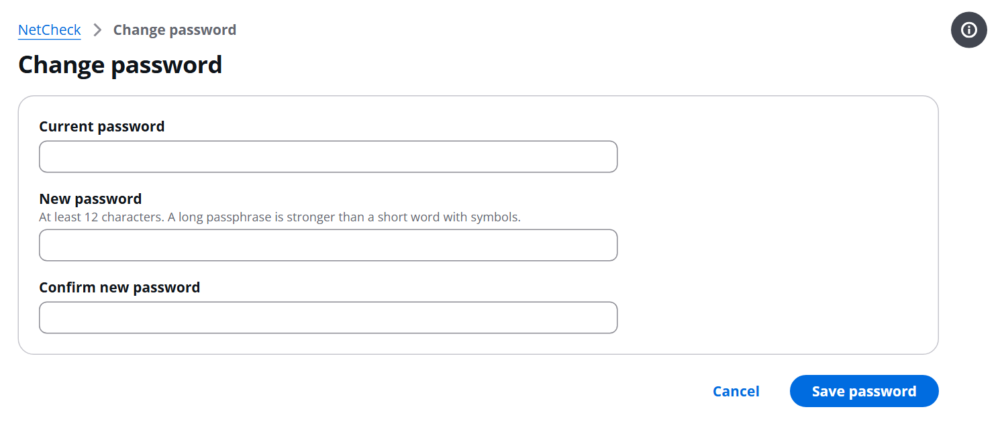
Almost every page shows tables that work the same way:
‹ 1 › arrows move between pages.The Dashboard is the home page. It summarizes the tests of the last 24 hours. An administrator sees everyone's; a user sees only their own (or the ones their role lets them see).
| Block | What it shows |
|---|---|
| Overview | How many tests there were and how many ended with All checks passed, with Connectivity failures or with Infrastructure errors (chapter 8 explains what each status means). |
| Checks by method | For each type of test (DNS, TCP…), how many succeeded, how many failed and how many got no answer (timed out). |
| Your access | How many namespaces you can use and which ones. |
| Recent tests | The latest tests. Click the date to open the result, or View all to go to the history. |
The Create test button at the top right opens the form for a new test.
What any user does: create tests, understand the results and use the history, tokens and personal proxies. As an administrator you need this to help others and to understand what you control from the administration pages.
Click Create test in the side menu or on the dashboard. The form has several blocks, which you fill in from top to bottom.
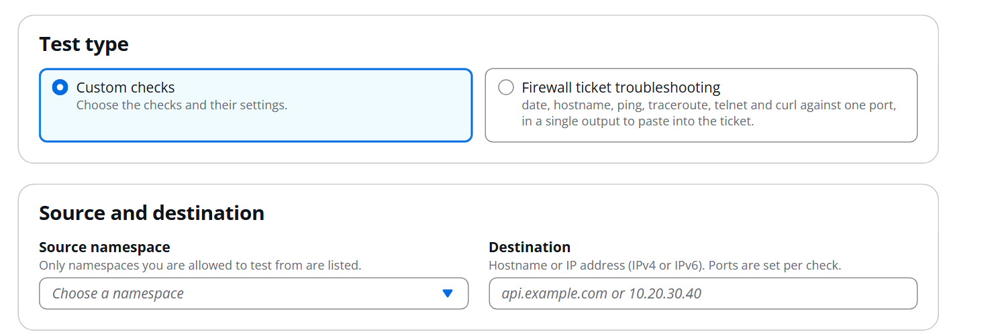
| Option | When to use it |
|---|---|
| Custom checks | You choose what to check and with which settings. It is the default and the most flexible option. |
| Firewall ticket troubleshooting | You produce in one go the output the firewall team usually asks for. Chapter 7 explains it. |
api.payments.svc.cluster.local) or an IP address
(IPv4 or IPv6). Do not type https://, ports or paths: you set the port and the path in each check.Tick one or more cards, or click Select all. They run one after another in a single probe. Only the checks that administrators left enabled and that your role allows in the chosen namespace appear. If you change namespace and one of them is no longer available, the form removes it and tells you.
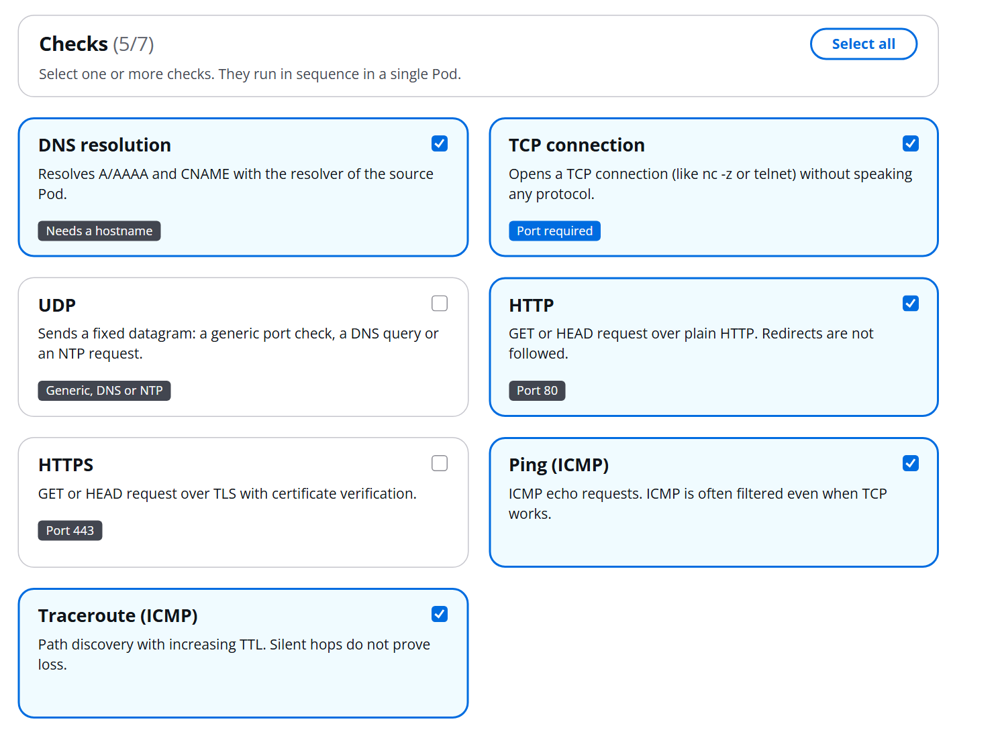
| Check | What it verifies | Port | Same as |
|---|---|---|---|
| DNS resolution | That the name turns into an IP from the namespace. It needs a name, not an IP. | — | getent ahosts |
| TCP connection | That a connection to the port can be opened. | Required, no default value | nc -z, telnet |
| UDP | That a UDP service answers: generic port, DNS server or NTP server. | Generic: required; DNS 53; NTP 123 | nc -u, dig |
| HTTP | That a website or API answers over unencrypted HTTP. | 80 (editable) | curl http://… |
| HTTPS | The same, encrypted, checking the certificate. | 443 (editable) | curl https://… |
| Ping (ICMP) | That the destination answers ping. | — | ping -c N |
| Traceroute (ICMP) | The hops the traffic passes through. | — | traceroute -I |
When you tick a card, its settings appear in the Check settings block:
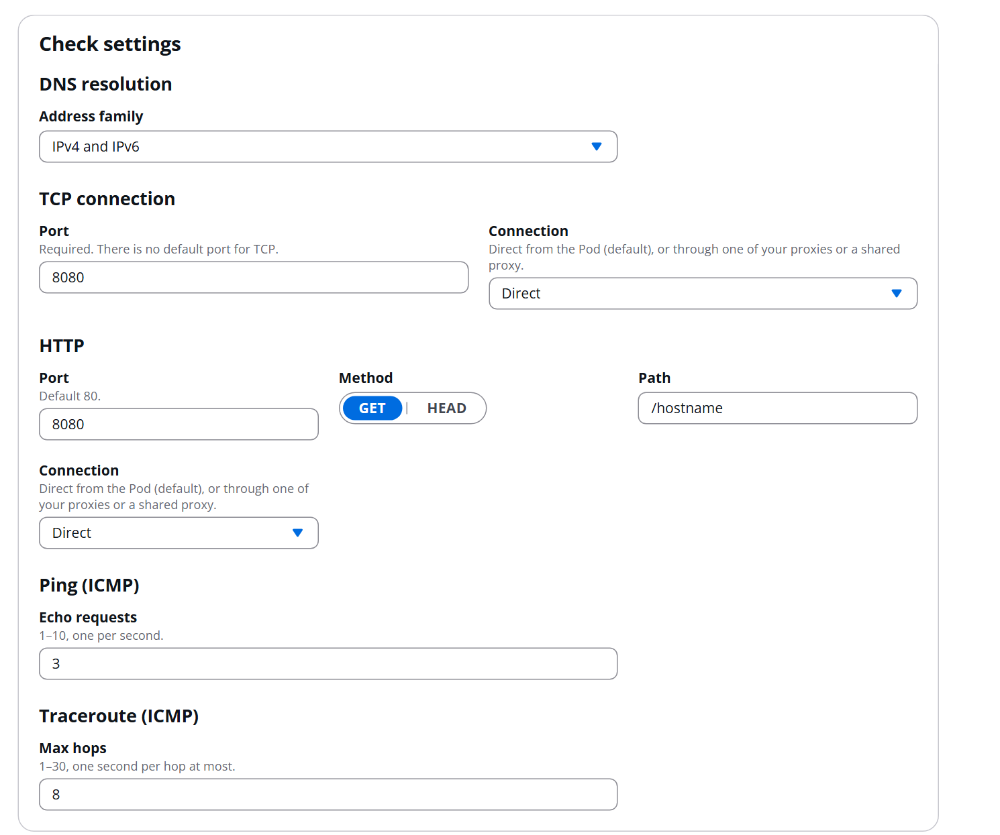
| Check | Settings |
|---|---|
| DNS resolution | Address family: IPv4 and IPv6, IPv4 only (A) or IPv6 only (AAAA). |
| TCP connection | Port (required) and Connection (direct or through a proxy, see below). |
| UDP | What to test over UDP: Generic port, DNS server or NTP server, and the port. |
| HTTP / HTTPS | Port, Method (GET or HEAD), Path (for example /health) and Connection. Redirects are not followed: you will see the 3xx code and where it points. |
| HTTPS | Ignore certificate errors: the request goes on even if the certificate has expired, is for another name or is signed by an unknown authority; the result lists each problem as a warning (like curl --insecure). |
| Ping (ICMP) | Echo requests: from 1 to 10, one per second. |
| Traceroute (ICMP) | Max hops: from 1 to 30, at most one second per hop. |
UDP does not set up a connection: the probe sends a message and the destination may or may not answer. That is why NetCheck only offers what can be tested safely:
| Mode | What it sends | How to read it |
|---|---|---|
| Generic port | Empty messages (up to three) | An answer = open. “Port unreachable” = closed (but the machine was reached). Silence = inconclusive. |
| DNS server | A standard DNS query | Any DNS answer, even an error, proves the server can be reached. |
| NTP server | A time request | Shows the server's stratum and how far the probe's clock is off. |
If you or the administrators have proxies set up, TCP, HTTP and HTTPS show the Connection setting:
Use it when your applications reach the destination through the proxy. A success proves the path through the proxy, not the direct one.
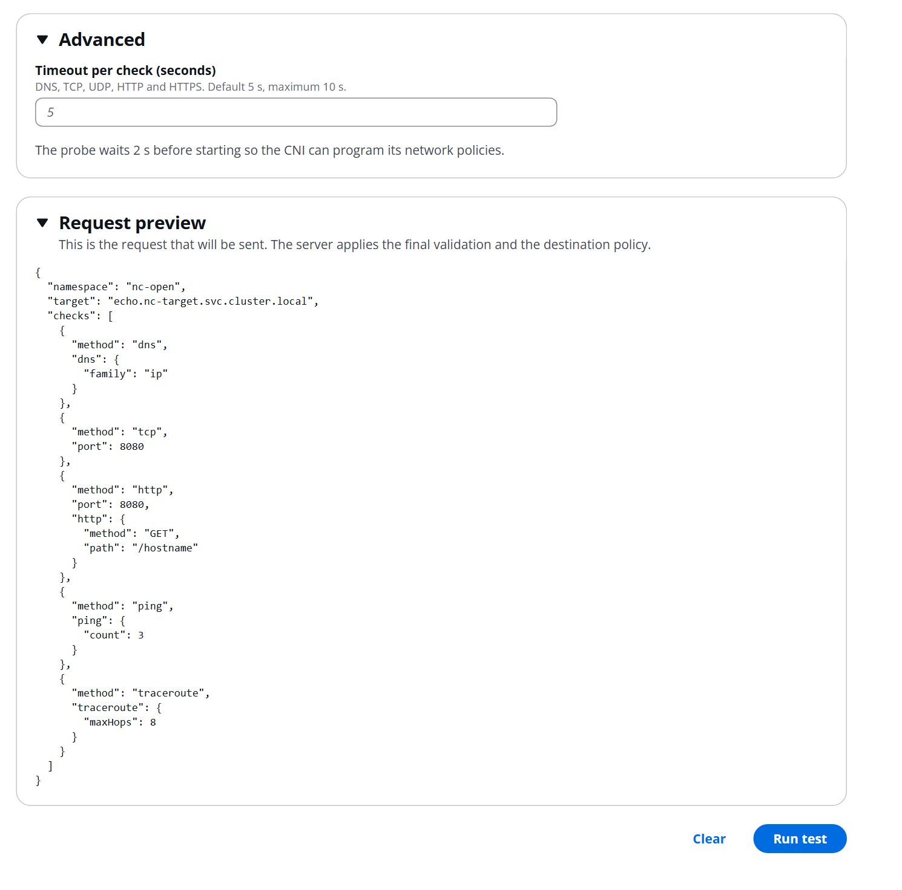
When you open a ticket with the firewall team, they usually ask for the output of date, hostname, ping,
traceroute, telnet and curl against the destination and the port, all together. NetCheck prepares it in one click.
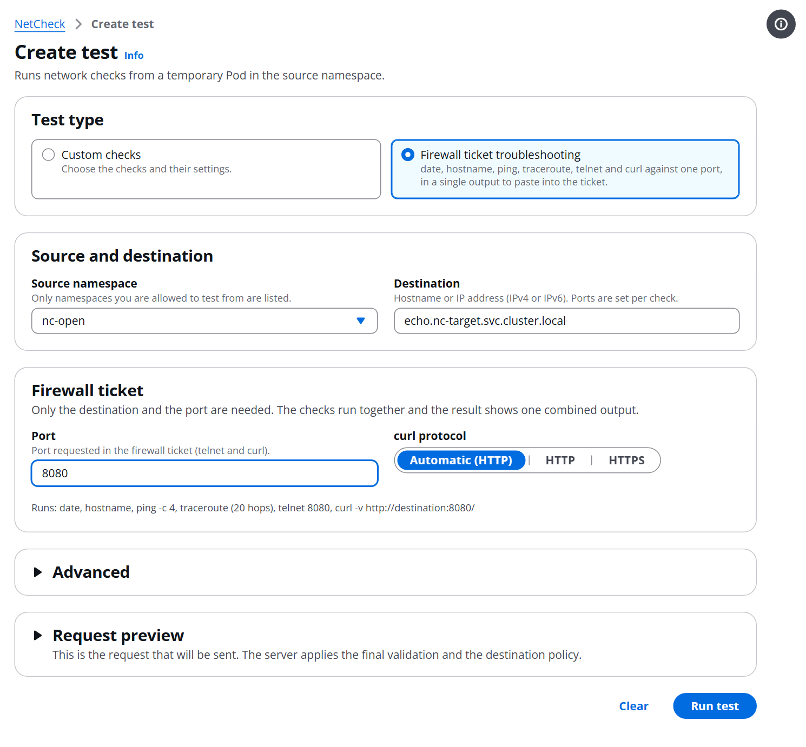
A single probe runs ping -c 4, traceroute (20 hops), telnet <port> and
curl -v against /, plus date and hostname. The result includes the
Firewall ticket report block with Copy report and
Download .txt so you can attach it:
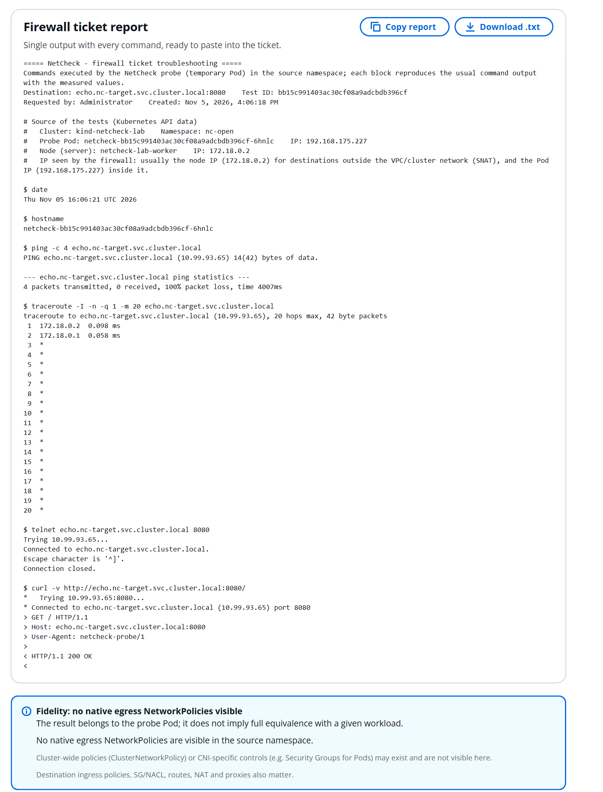
ifconfig: by design, the probe has no access to the server's interfaces. The node IP is already in the source block.telnet and curl.The result page has several blocks. At the top, Copy JSON copies the whole result (useful to attach it to an incident) and Run again opens the form filled in with the same values.
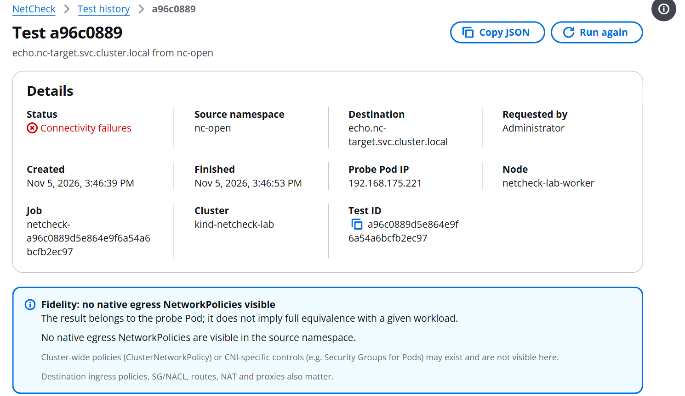
The Details block shows the status, the namespace, the destination, who requested it, the dates, the IP of the probe Pod, the node, the Job name, the cluster and the test ID (with a button to copy it).
| Status | What it means |
|---|---|
| Queued / Running | The probe is being created or is taking measurements. |
| All checks passed | Every check succeeded. |
| Connectivity failures | At least one network check failed (refused, no answer, DNS, no ICMP reply…). |
| Infrastructure error | NetCheck could not run the probe (permissions, namespace quota, image…). It is not a network result: tell the platform team and give them the test ID. |
The result is the probe's result, and its labels and IP are not those of your application. The notice says how close they are:
There can always be other layers you cannot see from here: security groups, policies on the destination side or firewalls.
The Path block draws where the traffic goes and where it stops, using only measured data: the probe Pod and its node, the traceroute hops (if you included it) and the destination with the result of each check. Hops that do not answer are grouped together; without a traceroute the middle section shows as not measured.
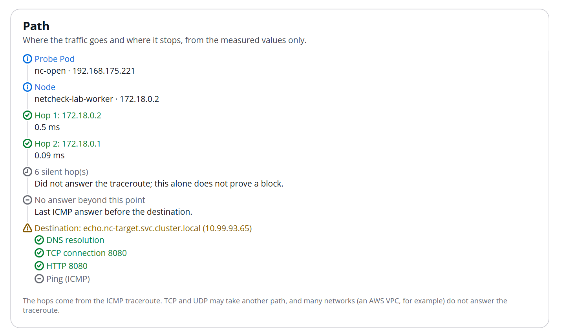
The Checks table has one row per check with its status and a suggested diagnosis. Select a row to see its details below, in tabs:
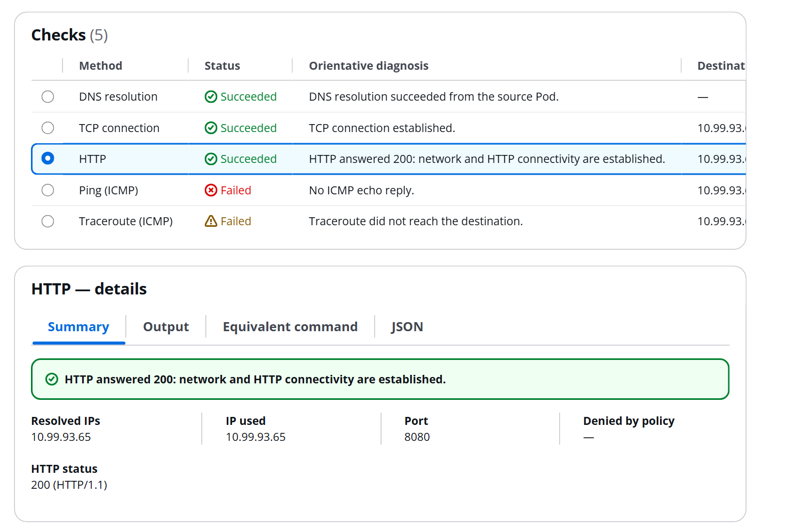
| Tab | Content |
|---|---|
| Summary | Diagnosis, resolved IPs, IP and port used, IPs denied by the policy, HTTP code, TLS version, certificate and timings (or the ping and traceroute tables). |
| Output | The probe's technical trace. |
| Equivalent command | An approximate command (getent, nc, curl, ping, traceroute) to reproduce it by hand, with a Copy button. The probe does not run it. |
| JSON | The full result of that check. |
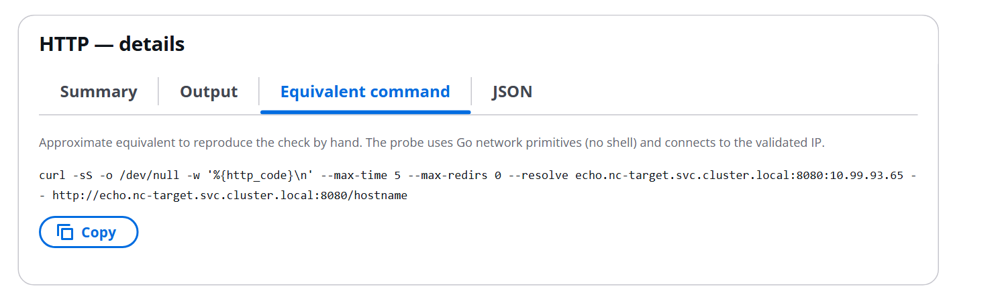
| Result | What it means | What it does NOT mean |
|---|---|---|
| TCP succeeded | There is a network path to that port. | That the application works. |
| TCP connection refused | The packet arrived and something answered “no” (nothing is listening on the port, or the Service has no endpoints). | A NetworkPolicy block. |
| TCP timed out | Nobody answered: it may be a NetworkPolicy, a security group, an ACL, the routing or a destination that is down. | Proof that a NetworkPolicy is blocking it. |
| DNS NXDOMAIN | The name does not exist for that DNS server. | A network problem. |
| DNS timed out | The DNS server could not be reached (a policy blocking port 53?). | — |
| HTTP/HTTPS 200–299 | The service answered correctly. | — |
| HTTP/HTTPS 401, 403, 404, 5xx | There is connectivity; the problem is in the application. It is shown as a warning. | A network problem. |
| TLS certificate not valid | It connected, but the certificate failed: expired, for another name, unknown authority or self-signed. | A network block. |
| HTTPS trusted through an authority configured in NetCheck | The certificate is valid thanks to an authority added in NetCheck (chapters 20 and 21). | That other clients accept it without that authority. |
| Through a proxy: proxy unreachable | The block is between the Pod and the proxy. | A block towards the destination. |
| Through a proxy: 403 / 407 | The proxy answered: its policy does not allow it, or it requires authentication. | A network block. |
| Through a proxy: 502 / 503 / 504 | The Pod reaches the proxy; the problem is further on. | That the Pod-to-proxy path is blocked. |
| UDP no reply | Inconclusive: open but silent, or filtered. | A block. |
| Ping no reply | No answer to the ping arrived. | That TCP is blocked: ping is often filtered. |
| Traceroute incomplete | The destination was not reached; the * hops did not answer. | Packet loss. |
| Destination denied | The NetCheck policy does not allow that destination; no traffic was sent. | A network result. |
Every finished test ends with the What is missing block, which says what needs to change, if anything:
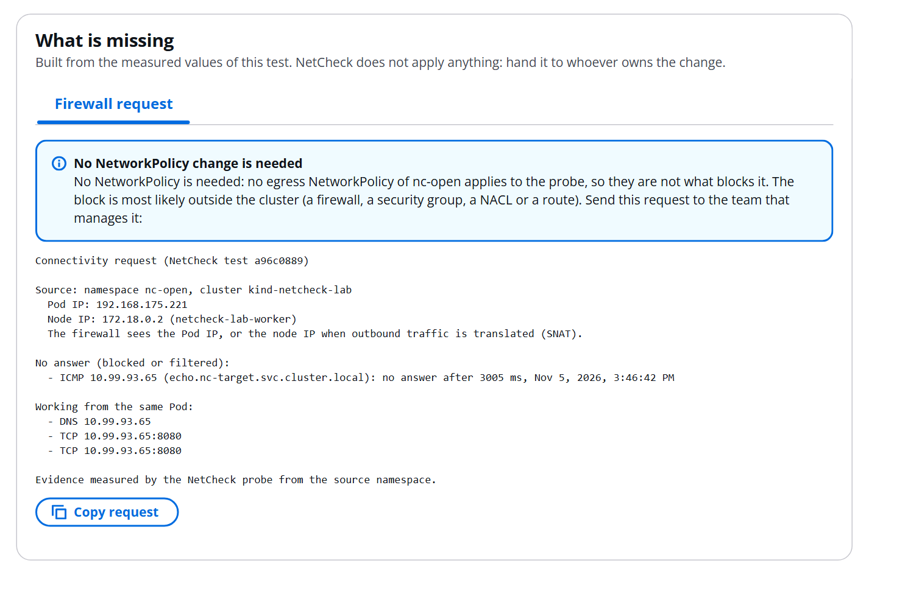
| Situation | What the block says |
|---|---|
| Every check got an answer | Nothing is missing. No network rules need changing; errors that did get an answer (refused, TLS, HTTP code) come from the destination. |
| Some checks got no answer and egress NetworkPolicies apply to the namespace | A NetworkPolicy change is probably needed, with a YAML proposal built from the measured IPs, ports and protocols (Suggested NetworkPolicy tab). |
| Some checks got no answer and no egress NetworkPolicy applies | No NetworkPolicy change is needed: the block is almost certainly outside the cluster. |
In blocked cases, the Firewall request tab has a ready-to-copy text with the source, the IPs of the Pod and the node, what did not answer and what does work from the same Pod. NetCheck never applies anything: it proposes it to whoever must make the change.
Test history lists the tests, from newest to oldest.
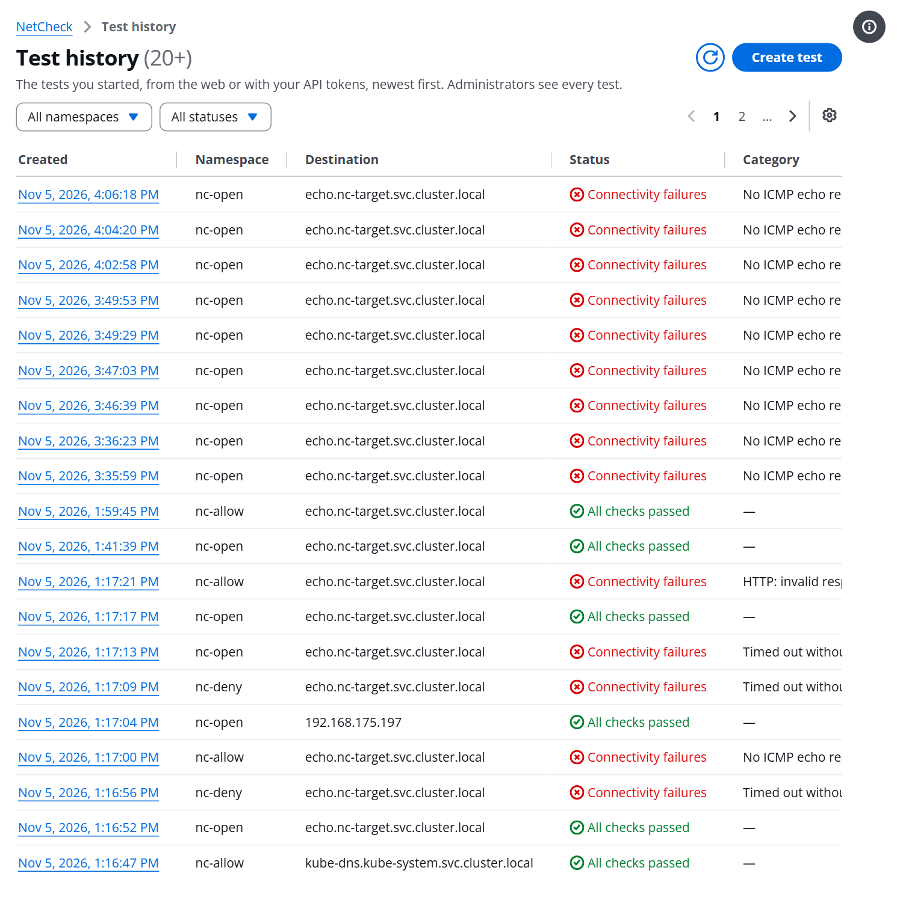
| Who | Which tests they see |
|---|---|
| Administrator | All of them, from every user and namespace. |
| User (built-in role) | Only the ones they ran, from the web or with their tokens. Other people's tests do not appear and their links answer “not found”, even if they share a namespace. |
| Role with Every test of its namespaces | Their own and all the tests of the namespaces they can use. |
| Role with The tests of the people sharing a group | Their own and those of the people in their groups, only in their namespaces. |
By default, the technical output is kept for 15 days and everything else for 45 days. Administrators can change this (chapter 22).
An API token lets a program, such as a deployment pipeline, run tests on your behalf with the
netcheck-cli tool. It acts with your permissions (your namespaces and the destination policy), but it can only run
and read tests: it cannot manage users or configuration.
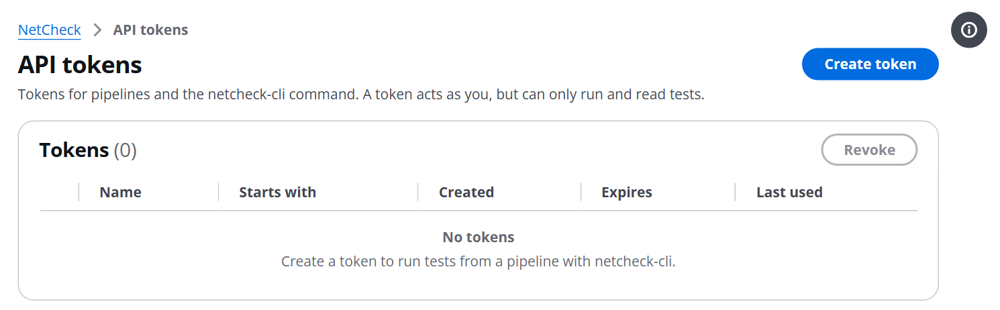
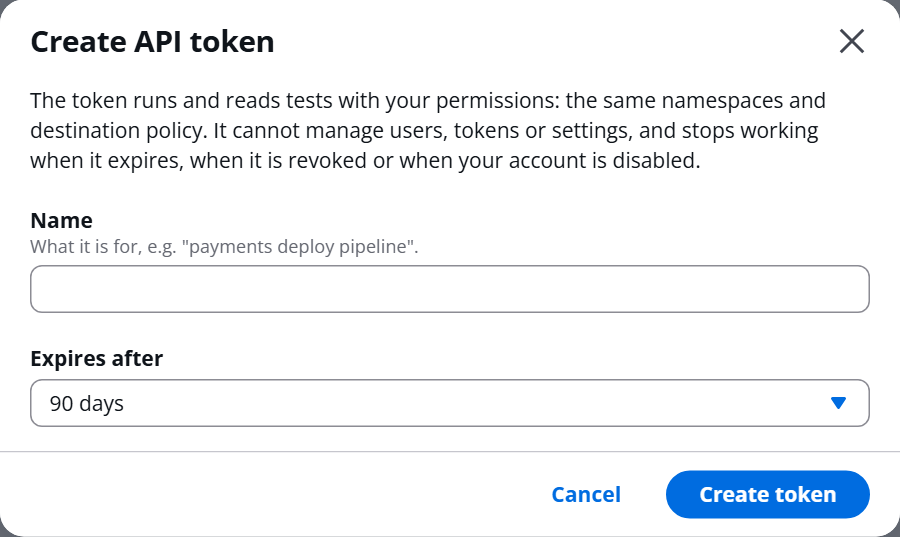
The table shows the name, how the token starts, when it was created, when it expires and when it was last used. To stop using one, select it and click Revoke: it stops working right away. The button to create tokens only appears if your role allows it.
export NETCHECK_URL=https://netcheck.yourcompany.com export NETCHECK_TOKEN=nck_... netcheck-cli run -n payments -t db.corp.example -c dns -c tcp:5432
netcheck-cli runs the test, waits for the result and exits with a code: 0 all correct, 1
connectivity failures, 2 the test could not run, 3 usage or API error (for example, a test
type that is disabled or not allowed by your role).
My proxies stores personal proxies: only you see and use them. Not even administrators see their name or address; if they open one of your tests, they only see “Personal proxy of <user>”. The page only appears if your role allows it.
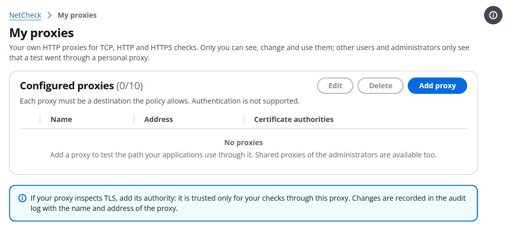
corp).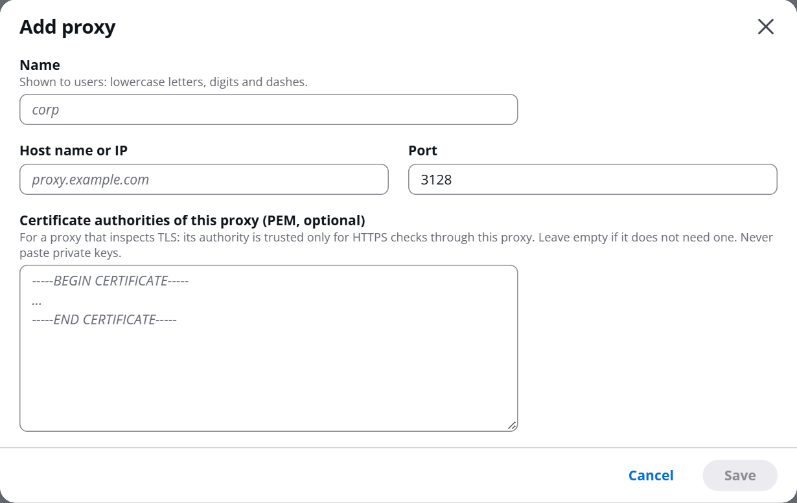
Every page of the Administration menu, option by option: what it is for, how to use it and what to keep in mind.
Administrators see the Administration section in the side menu. Each page controls one part of NetCheck, and changes apply at once, without reinstalling anything.
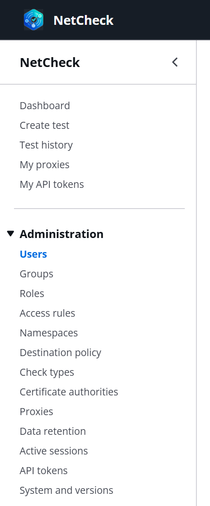
| Page | What it is for | Ch. |
|---|---|---|
| Users | Accounts, passwords, status | 13 |
| Groups | Give a role to several people | 14 |
| Roles | What each role allows | 15 |
| Access rules | Who signs in with SSO | 16 |
| Namespaces | Where you can test from | 17 |
| Destination policy | Where you can test to | 18 |
| Check types | Which tests exist | 19 |
| Certificate authorities | Trusted certificates | 20 |
| Proxies | Shared proxies | 21 |
| Data retention | How long data is kept | 22 |
| Active sessions | Who is signed in | 23 |
| API tokens | Everybody's tokens | 24 |
| System and versions | Version and settings | 25 |
| Can… | User | Administrator |
|---|---|---|
| Sign in, choose the language and change their password | ✔ | ✔ |
| Run tests | In their namespaces | In all available ones |
| See the dashboard and the history | Only their tests* | All |
| Have personal proxies and create API tokens | ✔ | ✔ |
| Manage users, groups, roles and access rules | — | ✔ |
| Namespaces, destination policy, check types, authorities, shared proxies, retention, sessions, everybody's tokens, system | —* | ✔ |
* A custom role can widen what a person sees or give them some administration pages (chapter 15). Users, groups, roles and access rules are always reserved for the Administrator role.
kube-system, kube-public, kube-node-lease and default) are never available.This is the part that raises the most questions, so it is worth going through it calmly before you start:
| Piece | Answers… | Who keeps the list of people |
|---|---|---|
| Role | What can be done? (which tests, which history, proxies, tokens, parts of the administration) | — |
| User | The specific account: its status (enabled or not), its own role and its namespaces | NetCheck (you) |
| Local group | Give a role in some namespaces to several accounts at once; it also defines “my team” for seeing its tests | NetCheck (you add and remove members) |
| Access rule | Who from SSO can sign in and with which role, based on their group in the identity provider | The identity provider (Entra ID, Okta, GitHub…) |
A person can get permissions through several routes at once. They add up per namespace, and the result, with where it comes from, is shown in Effective permissions (13.5). Disabling an account overrides everything.
Administration › Users lists every account:
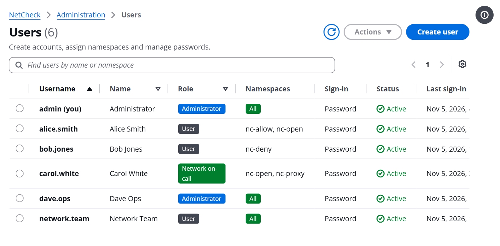
| Column | What it shows |
|---|---|
| Username | The name used to sign in. Yours has (you) next to it. |
| Name | The display name, which appears in the history. |
| Role | Administrator (blue), User (grey) or a custom role (green). |
| Namespaces | The ones they can use. All means all of them, including ones created later. The NetCheck tag means they can use the NetCheck namespace. |
| Sign-in | Password (local NetCheck account) or SSO (single sign-on). |
| Status | See the next table. |
| Last sign-in | When they last signed in. |
| Status | What it means |
|---|---|
| Active | Can sign in. |
| Temporary password | Must change the password at the next sign-in. |
| Locked | Too many failed attempts. It unlocks by itself after 15 minutes, or with Unlock. |
| Disabled | Cannot sign in; their sessions were ended and their tokens do not work. |
The search box filters by username, name or namespace. To act on an account, select it with the circle on the left and open Actions:
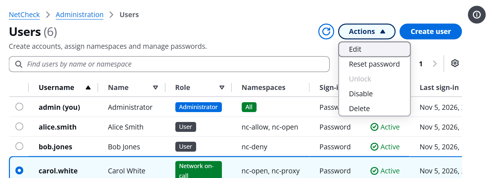
| Action | What it does | Section |
|---|---|---|
| Edit | Change display name, status, role and namespaces, and see their effective permissions. | 13.2 |
| Reset password | Give them a new temporary password. Does not apply to SSO accounts. | 13.6 |
| Unlock | Remove the lock caused by failed attempts. Only active if the account is locked. | 13.7 |
| Disable / Enable | Cut off or give back access without deleting the account. | 13.8 |
| Delete | Delete the account for good. | 13.9 |
., _ or - (for example maria.lopez). It cannot be changed later.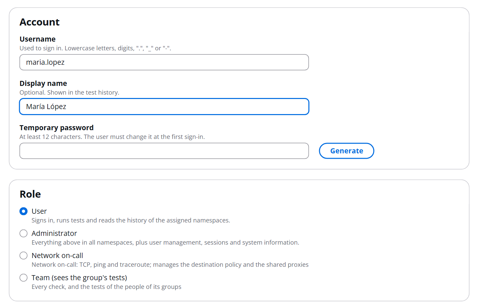
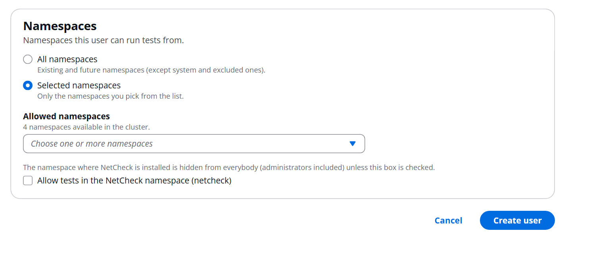
If the user already exists, the password is too short or you did not choose namespaces, the form shows the error next to the field.
Actions › Edit opens the account's page. The username cannot be changed; everything else can:
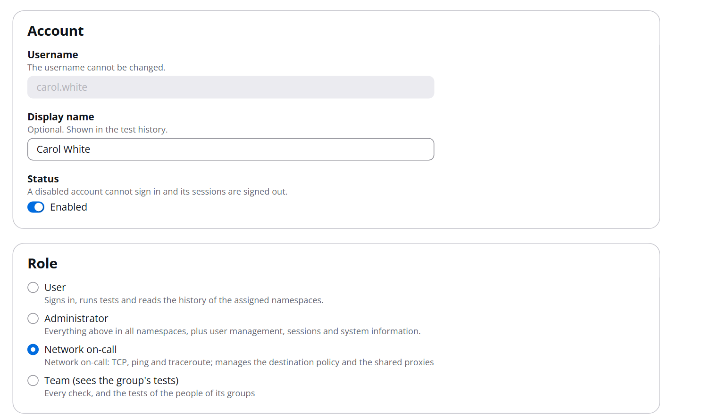
Click Save at the bottom of the page. The changes apply at once.
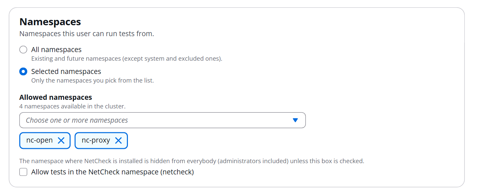
| Option | What it means |
|---|---|
| All namespaces | Dynamic access to every namespace that exists and to those created later, except the system ones, the excluded ones and the NetCheck one. A new namespace shows up for them in less than a minute. |
| Selected namespaces | Only the ones you pick from the list (read live from the cluster, with a search box). Even if more are created, they will not see them. |
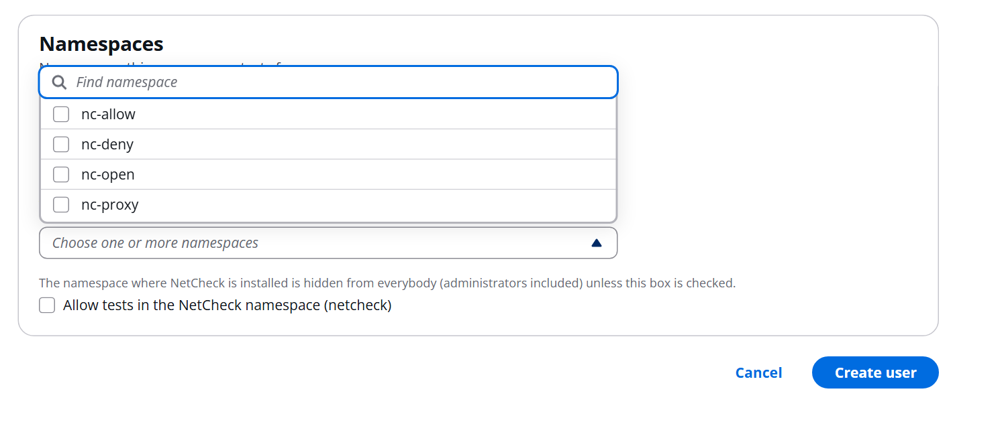
If a chosen namespace disappears from the cluster or is excluded, it is marked as No longer available.
The Allow tests in the NetCheck namespace (netcheck) box is unticked by default and works for any role. Tick it only for people who must troubleshoot NetCheck's own network (for example, the platform team). An account can have only this box and no other namespace.
At the bottom of each user's page, Effective permissions shows what that person can do right now and where it comes from. Use it to answer “why can't I…?”.
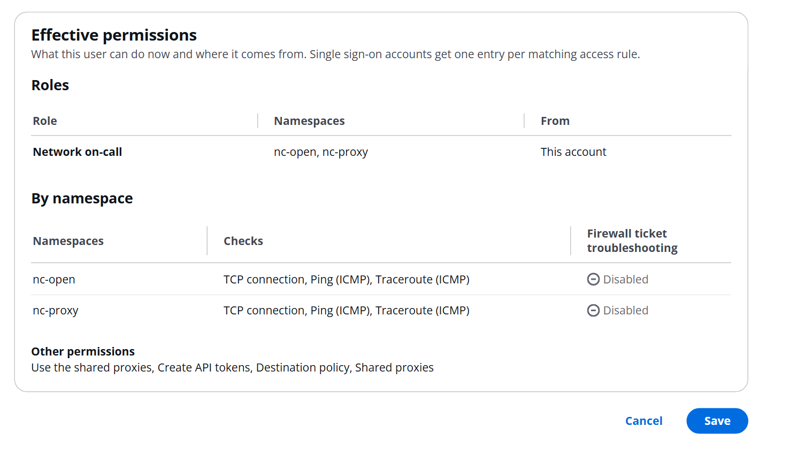
| Block | What it shows |
|---|---|
| Roles | Each role they have, in which namespaces and where it comes from: This account, Group … (local group) or Access rule for the group / for the user … (SSO). |
| By namespace | Which checks they can run in each namespace and whether they can use the firewall ticket. |
| Other permissions | Proxies, tokens, wider history and administration pages. |
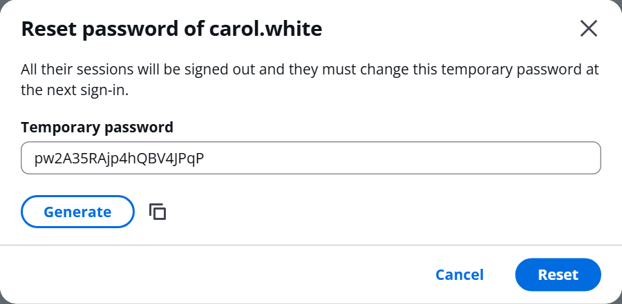
When you confirm, all of that person's sessions are ended, and they must change the password when they sign in. It also removes a lock.
After 5 failed attempts in a row the account is locked for 15 minutes (both values can be changed in the installation). Actions › Unlock removes the lock at once. The option is only active if the account is locked.
Disabling cuts off access without deleting the account. It is the right way to remove access temporarily, and the only one that really works with SSO accounts.
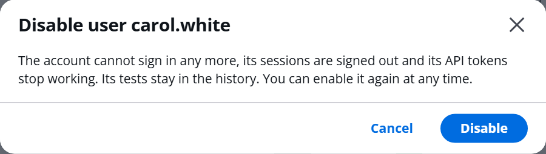
Actions › Delete deletes the account for good, with its sessions, API tokens and personal proxies. The test history it created is kept with its name.
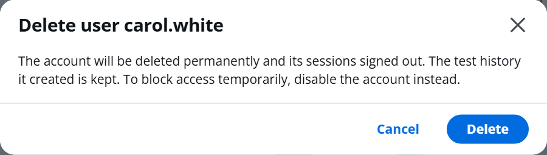
Administration › Groups gives a role, with its namespaces, to several people at once. It
is ideal for teams: “the payments team can test from payments and see the whole team's tests”.
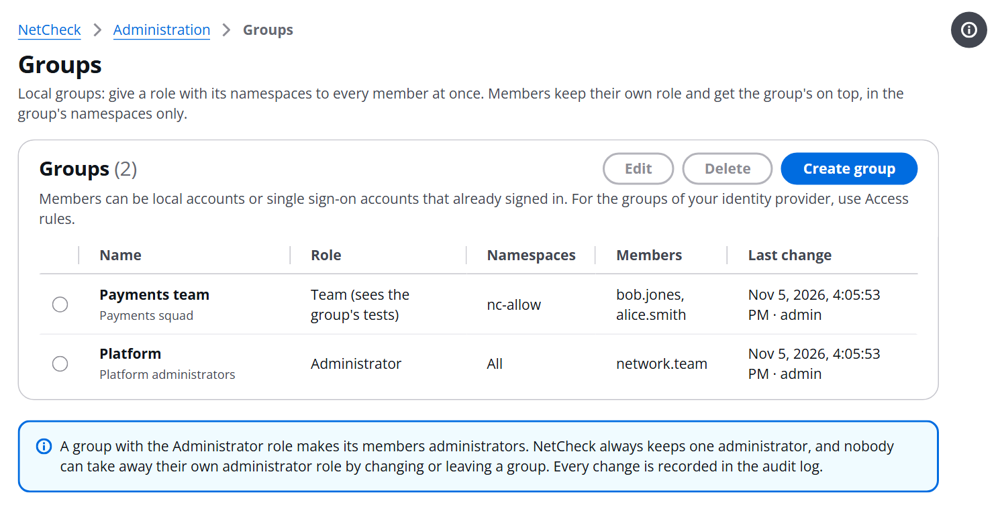
The table shows the name and description, the role, the namespaces, the members and the last change.
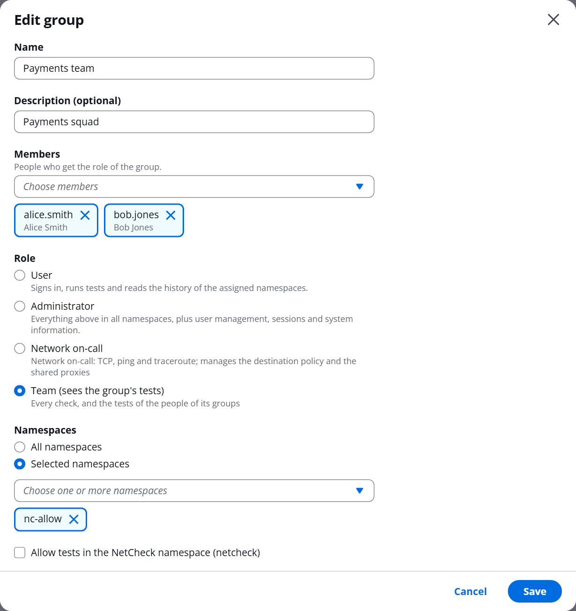
If the group's role has the The tests of the people sharing a group, in its namespaces permission, its members see, besides their own, the tests of their group mates, only in the namespaces they themselves can use. Personal proxies stay private: the others only see Personal proxy of ….
Select it and click Delete. Its members lose what the group gave them; their own role stays. All group changes are recorded in the audit log, with their members.
Administration › Roles defines what each role allows. User and Administrator are built in and cannot be changed. You can create custom roles to give exactly the permissions needed.
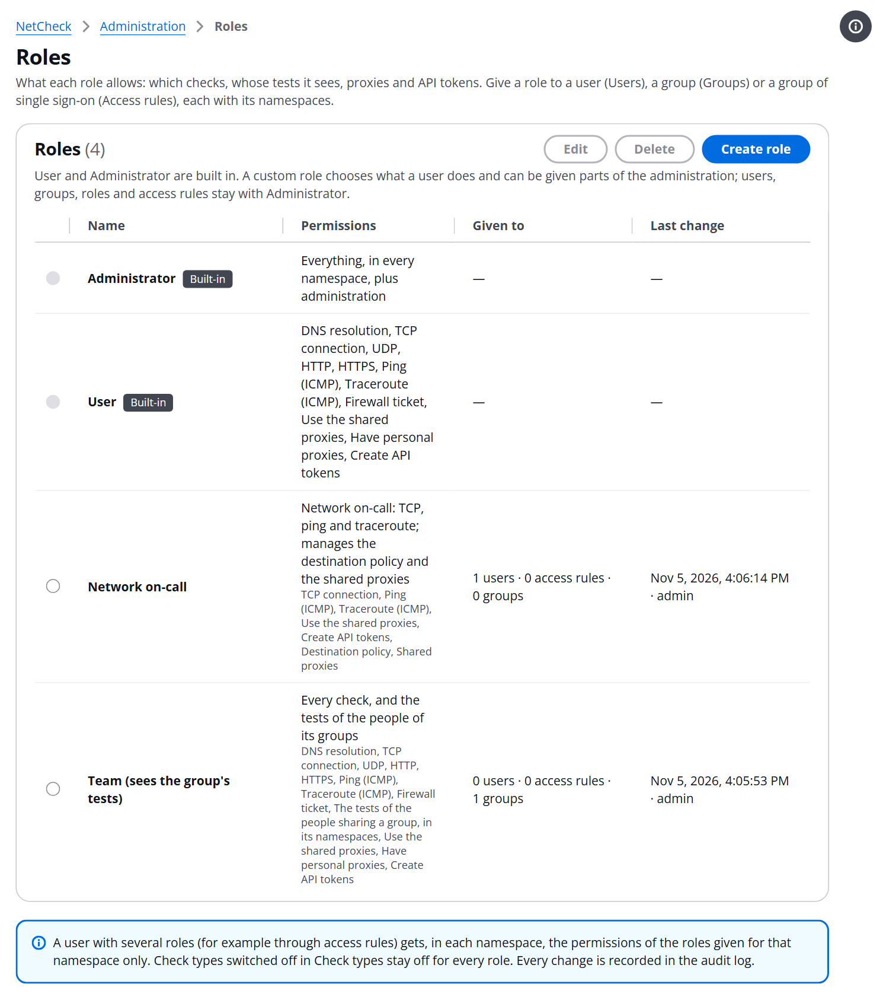
The Given to column says how many users, access rules and groups have each role.
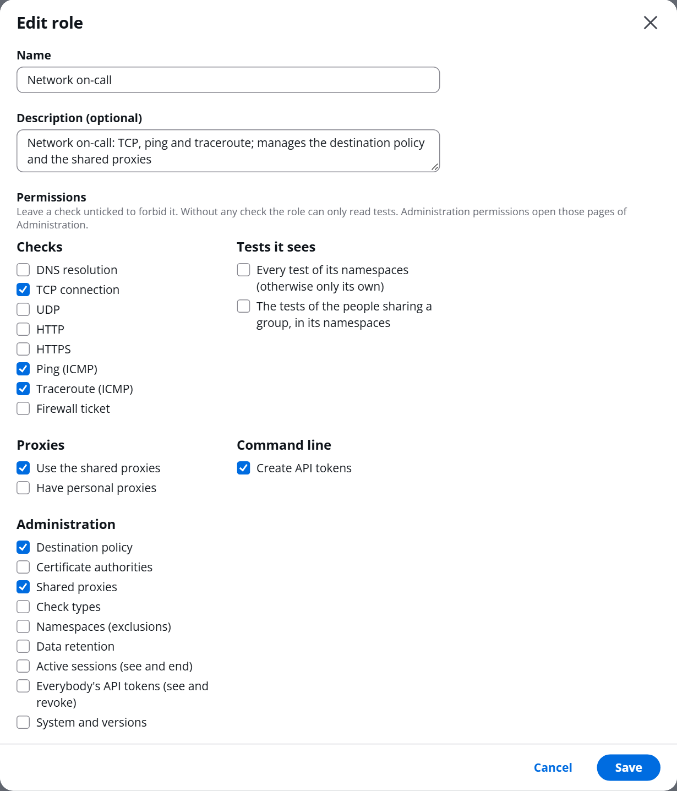
| Group | Permission | What it allows |
|---|---|---|
| Checks | DNS resolution | Run that type of check. With none ticked, the role can only look at tests. |
| TCP connection | ||
| UDP | ||
| HTTP | ||
| HTTPS | ||
| Ping (ICMP) | ||
| Traceroute (ICMP) | ||
| Firewall ticket | Use the firewall ticket troubleshooting mode. | |
| Tests it sees | Every test of its namespaces | See all the tests of the namespaces they can use, not only their own. |
| The tests of the people sharing a group | See the tests of their group mates, in their namespaces. | |
| Proxies | Use the shared proxies | Choose in tests the proxies that administrators share. |
| Have personal proxies | See the My proxies page and use their own proxies. | |
| Command line | Create API tokens | Create tokens for netcheck-cli. |
| Administration | Destination policy | See and change that administration page. People with any of these permissions see only those pages under Administration. |
| Certificate authorities | ||
| Shared proxies | ||
| Check types | ||
| Namespaces (exclusions) | ||
| Data retention | ||
| Active sessions (see and end) | ||
| Everybody's API tokens (see and revoke) | ||
| System and versions |
The built-in User role has every permission except seeing other people's tests and the administration.
A role with administration permissions lets you share out the work without giving full control. For example, a “Network team” role with Destination policy and Shared proxies will see only those two pages in the menu.
You can give a role in three ways, each with its own namespaces:
In each namespace, a person has the permissions of the roles they were given for that namespace.
Example: “Network on-call in orders” plus “User in payments” allows only the on-call tests
in orders. Check types disabled in Check types stay disabled whatever the role.
netcheck-cli and tokens answer 403 check_not_allowed, naming the check.Select it and click Delete. A role given to someone (users, groups or rules) cannot be deleted: the notice says how many it is given to. Give them another role first. Roles are managed only from the web, and every change is recorded in the audit log.
With single sign-on turned on, Administration › Access rules decides who can sign in with the identity provider and with which permissions, before they sign in for the first time. Without at least one rule that applies to them, nobody can sign in with SSO.
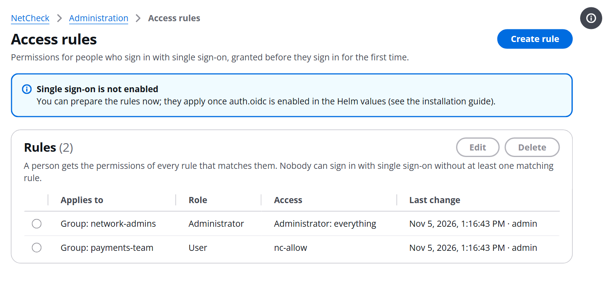
acme:payments-team for a GitHub team). Type it exactly as the provider sends it; upper and lower case do not matter.ana@example.com).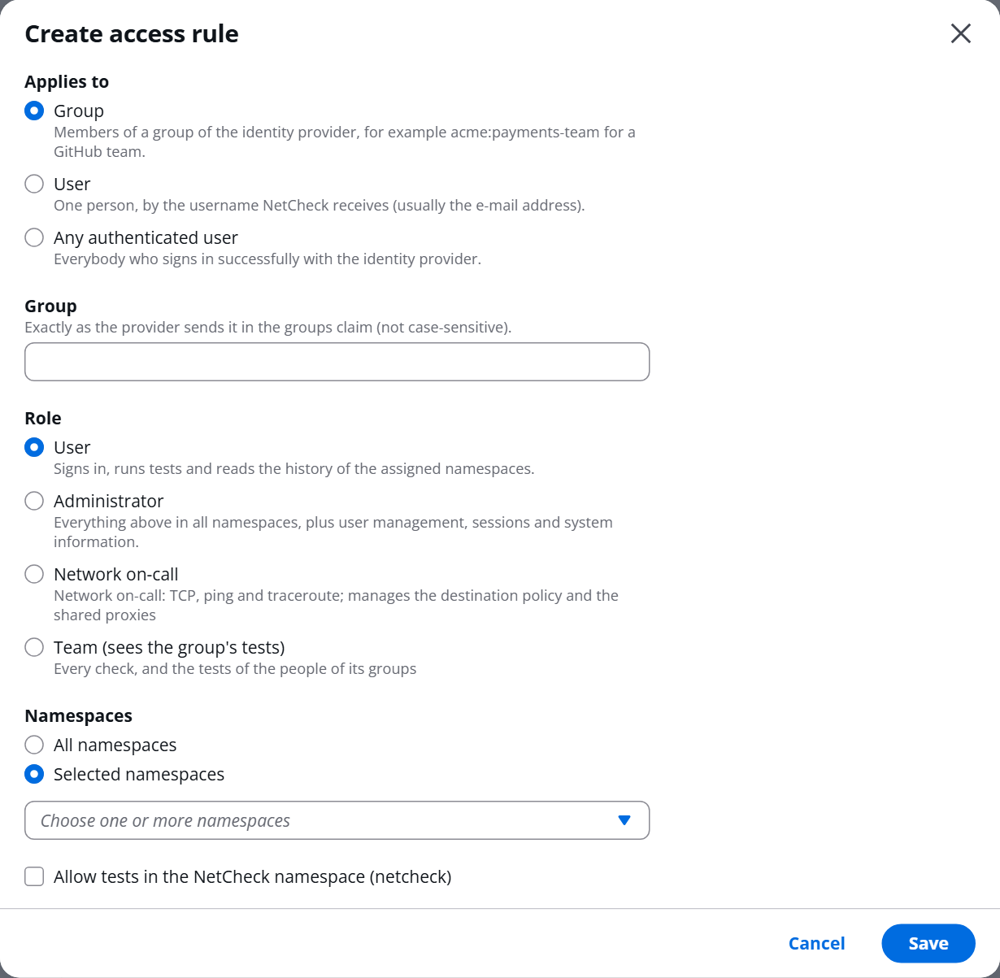
Administration › Namespaces lists every namespace in the cluster and whether it can be used to run tests. From here you can exclude any of them, with immediate effect.
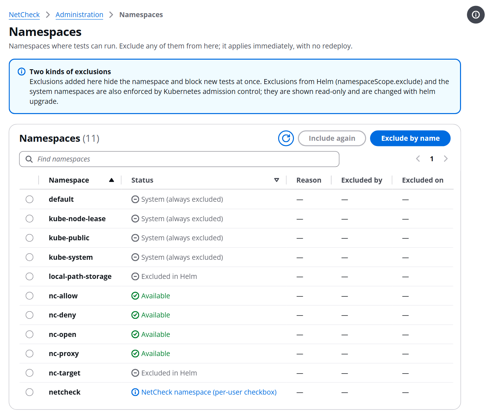
| Status | What it means | Can it be changed from the web? |
|---|---|---|
| Available | Tests can be run (depending on each user's namespaces). | Yes: Exclude |
| Excluded in the web | An administrator excluded it here; you can see who, when and why. | Yes: Include again |
| Excluded in Helm | Excluded in the installation. | No: with Helm |
| System (always excluded) | default, kube-system, kube-public, kube-node-lease. | No, never |
| NetCheck namespace | Only for accounts with the matching box ticked. | In each account |
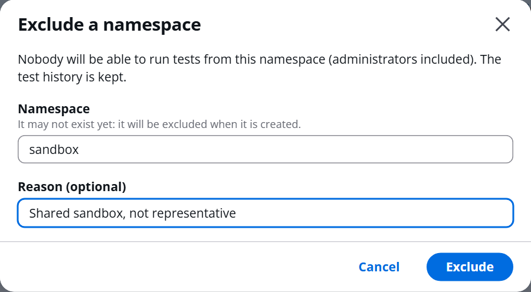
If the installation uses the fixed namespace list mode, only the ones configured in Helm are shown, and a notice says so.
Administration › Destination policy decides where to you can test: names, networks and ports. Changes apply to the next test, without restarting anything. The header says who made the last change and when.
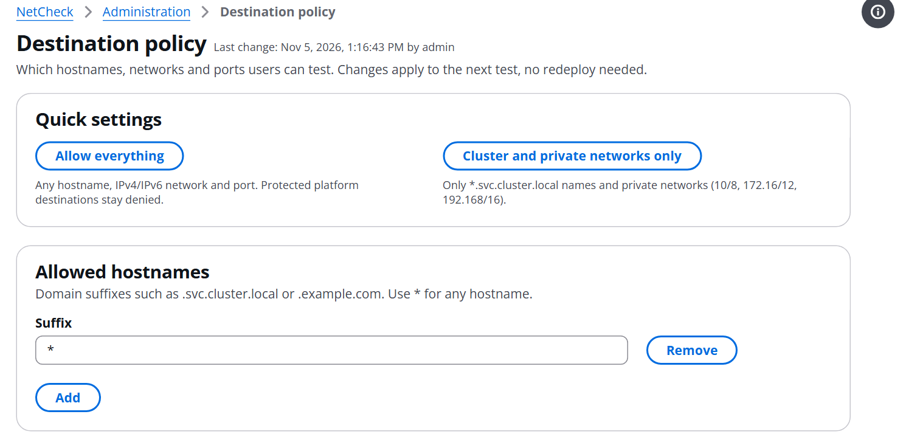
| Block | What it controls |
|---|---|
| Quick settings | Allow everything (any name, network and port) or Cluster and private networks only (names *.svc.cluster.local and networks 10/8, 172.16/12, 192.168/16). They only fill in the form: nothing changes until you click Save. |
| Allowed hostnames | Domain suffixes (.svc.cluster.local, .corp.example.com). * allows any name. |
| Allowed networks | IPv4/IPv6 ranges in CIDR format. Every resolved IP must be in one of them; 0.0.0.0/0 and ::/0 allow any address. |
| Allowed ports | From–To ranges for TCP, UDP, HTTP and HTTPS. Ping and traceroute do not use a port. |
| Denied networks | Always denied, even if they are inside an allowed network (for example, a sensitive subnet). |
| Platform protections | Cloud metadata, the Kubernetes API, loopback, link-local, multicast and reserved ranges. They are set in the installation and cannot be removed from the web. |
| Check a destination | Says whether a name or an IP (and port) is allowed without sending traffic. |
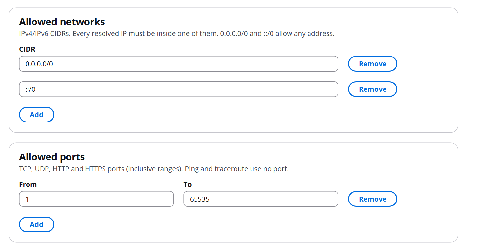
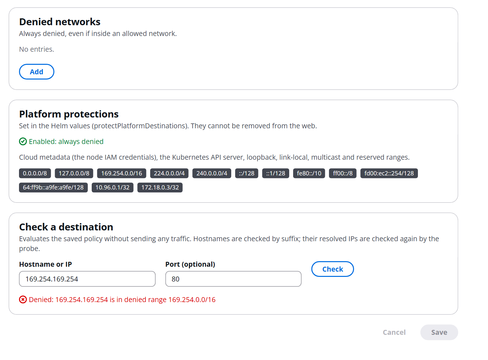
For a name, the suffix is checked; the probe checks again the IPs it resolves to before connecting. The check uses the saved policy, not pending changes.
NetCheck reads from the cluster the exact addresses of the Kubernetes API server and refreshes them every 30 seconds. Until it has read them, it shows instead the ranges configured in the installation, which are usually whole subnets. If they still appear a minute after startup, NetCheck cannot read those addresses: the Pod log explains why, and the platform team must fix it.
The Helm values are only the initial policy; after that, what you save here is what counts. If the installation uses
destinationsManagedBy: helm, the page is read-only with the “Managed in Helm” notice,
and changes are made in the Helm values. Tests already running keep the policy they were created with.
Administration › Check types turns each type of test on or off for everybody, administrators included: DNS, TCP, UDP, HTTP, HTTPS, ping, traceroute and the firewall ticket mode. Everything is enabled by default.
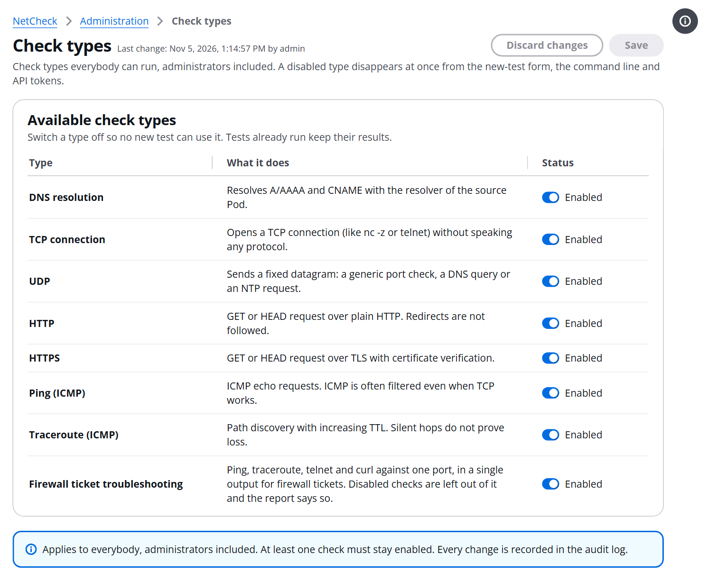
netcheck-cli and tokens reject it with 403 check_type_disabled; the CLI exits with code 3.At least one type must stay enabled. Every change is recorded in the audit log. If the installation uses
checkTypesManagedBy: helm, the page is read-only.
HTTPS checks verify certificates only against public authorities. A server with a certificate from the corporate PKI, or a firewall that decrypts TLS traffic along the way, would show up as signed by an authority the probe does not trust. Administration › Certificate authorities adds authorities that every HTTPS check trusts, on top of the public ones, with or without a proxy.
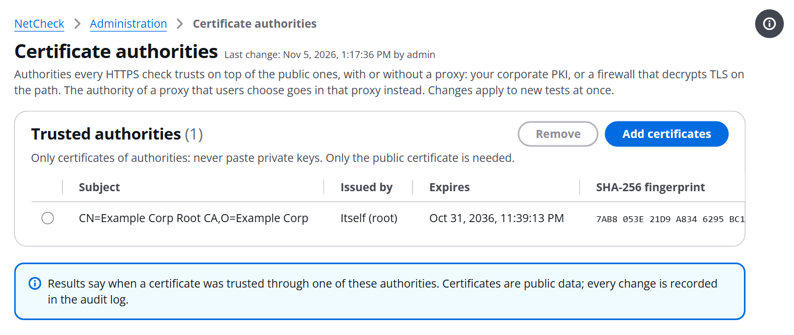
The table shows the subject, who issued it (Itself (root) if it is a root), the expiry date (expired ones are marked) and the SHA-256 fingerprint, so you can compare it with the one the PKI team gives you.
-----BEGIN CERTIFICATE----- to -----END CERTIFICATE-----. You can paste several: a bundle is split up by itself and duplicates are dropped.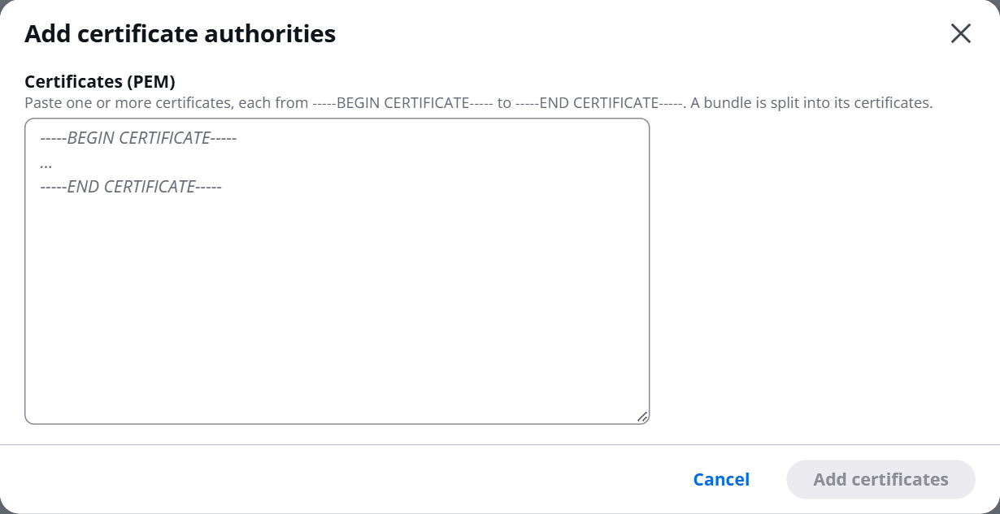
--cacert. If a public website such as www.google.com shows up as validated by your corporate authority, something along the way is inspecting TLS.NetCheck trusts non-public authorities in two places. Choose based on who issued the certificate the check receives:
| Situation | Where the authority goes | Who trusts it |
|---|---|---|
| Your servers have certificates from the corporate PKI | Here | Every HTTPS check |
| A firewall decrypts TLS transparently (with no proxy configured) | Here | Every HTTPS check |
| An HTTP proxy that inspects TLS and is chosen in Connection (Zscaler, Netskope, Squid…) | In that proxy (chapter 21) | Only HTTPS checks through that proxy |
With trustedCasManagedBy: helm the list comes from the Helm values and the page is read-only.
When your applications reach a destination through a company proxy, testing the direct path answers the wrong question. Administration › Proxies sets up proxies that users can choose for TCP, HTTP and HTTPS. It is always optional: by default each check uses the direct path, and with no proxies the option does not even appear.
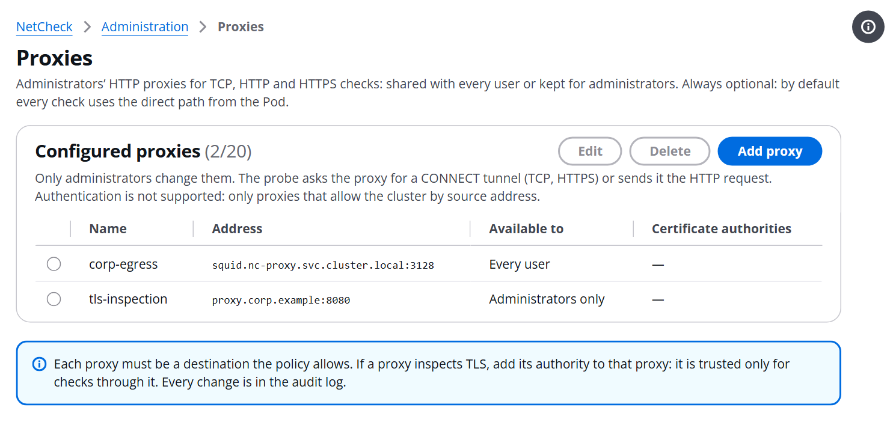
| Shared proxies | Personal proxies | |
|---|---|---|
| Where | Administration › Proxies | My proxies (chapter 11) |
| Who manages them | Administrators (or a role with Shared proxies) | Only their owner |
| Who uses them | Every user, or administrators only | Only their owner |
| Limit | 20 | 10 per person |
corp-egress).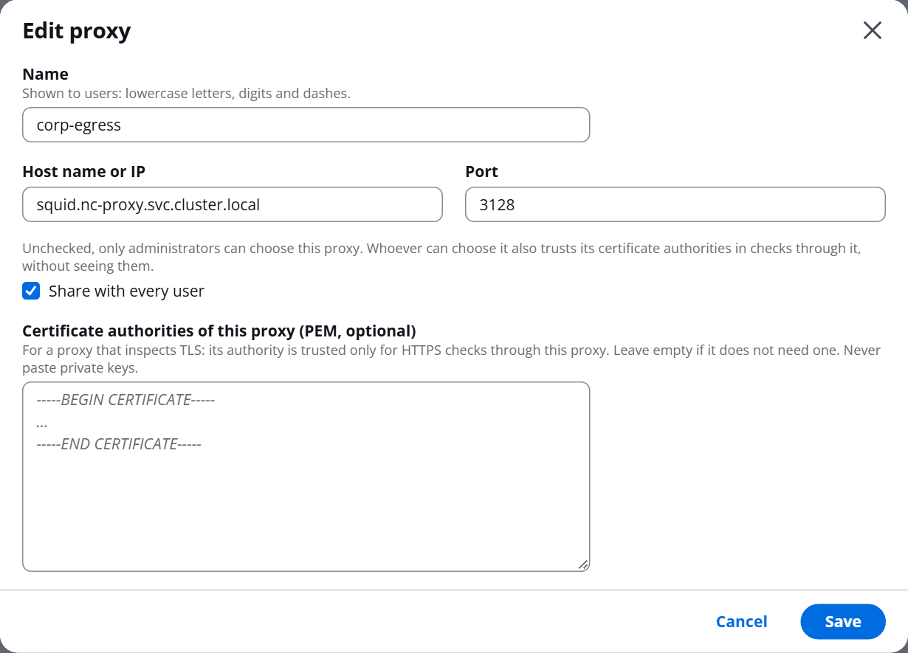
CONNECT tunnel to the destination (like curl --proxy).curl -x).proxiesManagedBy: helm the page is read-only. Personal proxies are always managed in the web.Administration › Data retention sets how long NetCheck keeps data. The changes apply within an hour, without restarting anything.
| Setting | What is deleted when the period ends | Default |
|---|---|---|
| Technical output (days) | The raw output of each check. The result, the diagnosis and the timings are kept. | 15 |
| Test history and audit log (days) | The tests with all their results and the audit events. | 45 |
Queued or running tests are never deleted. The Helm values are only the starting values.
Administration › Active sessions shows who is signed in right now.
auth.trustedProxyCidrs). Otherwise, you will see the IP of the proxy in between.Administration › API tokens lists the tokens of every user: name, how it starts, owner, creation date, expiry date and last use.
Select one and click Revoke when it is no longer needed or may have leaked. Pipelines that use it fail right away with an authentication error. Expired tokens are deleted by themselves. Creating and revoking tokens is recorded in the audit log.
Administration › System and versions is a read-only information page:
| Block | What it shows |
|---|---|
| Running version | Version, commit, build date, Helm chart version and the images (with their fingerprint) of NetCheck and of the probe. |
| Version history | Each version that has started in this installation, with when it was first seen, its last start and number of starts. It tells you what was deployed and when. |
| Platform settings | Cluster, namespace scope, NetCheck namespace, checks per test, maximum duration and the wait for policies to be scheduled. They are set in Helm. |
| Destination policy | Summary of the policy and the state of the protections; Edit policy opens its page. |
| Data retention | Summary of the periods; Edit retention opens its page. |
Upgrades are not done from the web: the platform team does them with Helm (chapter 28). Afterwards, the new version shows up here as the running version.
These rules protect the installation and cannot be turned off:
Recipes for the most common tasks, what can only be done with cluster access, how to solve problems, the glossary and the application's limits.
Each recipe sums up the steps for a specific task and points to the chapter where it is explained in detail.
Details in chapter 13.
| What you see in Users | What to do |
|---|---|
| Status Locked | Actions › Unlock, or wait 15 minutes. |
| They forgot the password | Actions › Reset password and send them the temporary one. |
| Status Disabled | Actions › Enable, if they should have access again. |
| SSO account that does not appear, or a “no access rule…” message | Create an access rule for their group or their user (chapter 16). |
| “Too many sign-in attempts” message | Wait a minute (per-IP-address limit). |
.corp.example.com.Some tasks are not done from the web, but with Helm and kubectl, the Kubernetes command-line tools. The platform team, which has access to the cluster, usually does them. This chapter helps you know what to ask for.
<version> with the right NetCheck version and
values.yaml with your installation's configuration file. The NetCheck namespace is usually netcheck.kubectl -n netcheck get secret netcheck-bootstrap-admin -o jsonpath='{.data.password}' | base64 -d; echo
It is temporary: it must be changed at the first sign-in.
helm upgrade netcheck oci://ghcr.io/hgeorge123/charts/netcheck --version <version> \ -n netcheck -f values.yaml --wait --timeout 10m
Helm exclusions, limits, log level, SSO and similar settings are changed by editing values.yaml and running
helm upgrade. The Pod restarts with the new configuration; if a value is not valid, it does not start and the log says
which one.
netcheck-data volume.kubectl -n netcheck scale deploy/netcheck --replicas=0
# take the volume snapshot
kubectl -n netcheck scale deploy/netcheck --replicas=1
To restore, a volume is created from the snapshot, in the same zone, and NetCheck is installed pointing to it with
persistence.existingClaim.
If nobody can sign in as an administrator (forgotten password, account locked or disabled):
# 1. Turn on recovery: admin goes back to the password in the Secret helm upgrade netcheck oci://ghcr.io/hgeorge123/charts/netcheck --version <version> -n netcheck -f values.yaml \ --set auth.bootstrapAdmin.recoverOnStart=true --wait kubectl -n netcheck get secret netcheck-bootstrap-admin -o jsonpath='{.data.password}' | base64 -d; echo # 2. Sign in as admin and change the password (required) # 3. Turn recovery off straight away helm upgrade netcheck oci://ghcr.io/hgeorge123/charts/netcheck --version <version> -n netcheck -f values.yaml --wait
The recovery is recorded in the audit log and in the Pod log. Only someone with administrator access to the cluster can do it.
auth.bootstrapAdmin.existingSecret). The installation guide explains how to create it.kubectl -n netcheck logs deploy/netcheck.logLevel): debug, info (default), warn or error.helm uninstall netcheck -n netcheck
# These are kept on purpose (data and credentials). Delete them only if you are sure:
kubectl -n netcheck delete pvc netcheck-data
kubectl -n netcheck delete secret netcheck-bootstrap-admin
kubectl delete namespace netcheck
netcheck-data volume removes users, history and
audit log for good.| Symptom | Likely cause | What to do |
|---|---|---|
| “Not allowed by the NetCheck destination policy” | Protected destination (metadata, API, loopback…) or restricted by the policy | The message gives the exact reason. Review Destination policy and use Check a destination. |
| A check does not appear in the form | Disabled in Check types, or not allowed by the role in that namespace | Review Check types and the person's Effective permissions. |
check_type_disabled or check_not_allowed error in the CLI | The same, from a pipeline | Same as above. |
| A namespace does not appear | Not assigned, excluded, a system namespace or just created | Recipe 27.7. |
| The NetCheck namespace does not appear | Hidden by design | Tick the Allow tests in the NetCheck namespace box on that account. |
| Every test ends in Infrastructure error | NetCheck cannot talk to the Kubernetes API, or there is a permissions problem | Tell the platform team and give them the test ID. |
| “Namespace … has no room for the probe Pod” | A namespace quota is full; the message says which one and how much is missing | The namespace owner raises the quota. The probe needs 50m of CPU and 32Mi of memory (requests), 200m and 64Mi (limits), one Pod and one Job. |
| Ping or traceroute: “ICMP is not permitted inside the probe” | The node does not support the setting needed, or an external admission policy blocks it | Tell the platform team. |
| Ping gets no answer but TCP works | ICMP filtered by the network | This is normal. Test with TCP or HTTP(S) on the real port. |
| My application cannot connect but NetCheck says it succeeded | The probe may have different rules from the application | Review the fidelity notice and share the result with the platform team. |
| The client IP in Active sessions is always the same | The installation does not know the load balancer's network | Ask for auth.trustedProxyCidrs to be configured. |
| Lots of “Too many sign-in attempts” at sign-in | Per-IP limit; or everyone arrives with the same load balancer IP | Same as above. |
| The initial admin password does not work | The Secret changed after the admin was created (common with Argo CD) | Recover access (28.5) and use your own Secret. |
| Symptom | Likely cause | First command |
|---|---|---|
Pod and volume in Pending | No storage driver, or missing permissions | kubectl -n netcheck describe pvc netcheck-data |
Pod in CrashLoopBackOff | Invalid configuration | kubectl -n netcheck logs deploy/netcheck --previous |
Pod in ImagePullBackOff | The nodes cannot reach the image registry | Check the internet access or the image mirror |
| The web page does not load | Problem in the inbound route (HTTPRoute or Ingress) | kubectl -n netcheck describe httproute netcheck or describe ingress netcheck |
| Term | Definition |
|---|---|
| Access rule | Decides who signs in with SSO and with which role and namespaces. |
| Administrator | Built-in role with every permission, including managing users, groups, roles and access rules. |
| API token | Key that lets a program use NetCheck on behalf of a person. |
| Audit log | Record of who did what and when. |
| Certificate authority (CA) | Organization that signs certificates. NetCheck trusts the public ones and the ones you add. |
| Check | Each of the individual tests inside a test (DNS, TCP…). |
| CIDR | Notation for an IP range, such as 10.0.0.0/8. |
| Cluster | Set of servers managed by Kubernetes. |
| CNI | The Kubernetes network component that enforces NetworkPolicies (Calico, Cilium…). |
| Corporate PKI | The infrastructure the company uses to issue its own certificates. |
| Destination policy | List of names, networks and ports you can test to. |
| DNS | System that turns names into IP addresses. |
| Fidelity | How close the probe's result is to the one your application would get. |
| Helm | Tool for installing and upgrading applications in Kubernetes. |
| ICMP | The protocol ping and traceroute use. |
| Identity provider | The company account system (Entra ID, Okta, Google, GitHub…). |
| Job | Kubernetes object that runs a task until it finishes. Each test creates one. |
| Kubernetes API | The central service that controls the cluster. NetCheck uses it to create the probes; the probes can never reach it. |
| Local group | Set of NetCheck accounts that get a role together. |
| Namespace | Separate space inside the cluster, usually one per application or team. |
| NetworkPolicy | Kubernetes network rule that limits a namespace's connections. |
| Node | Each server in the cluster. |
| OIDC | The standard NetCheck uses to talk to the identity provider for SSO. |
| PEM | Text format of a certificate, between -----BEGIN CERTIFICATE----- and -----END CERTIFICATE-----. |
| Pod | Smallest unit that runs in Kubernetes. |
| Probe | Temporary Pod NetCheck creates to take measurements. |
| Proxy | Go-between that outgoing traffic passes through. |
| Role | Set of permissions. |
| Service | Stable Kubernetes name used to reach a group of Pods. It does not answer ping. |
| SHA-256 fingerprint | A unique identifier of a certificate, to check that it is the right one. |
| SNAT | Source address translation: going out, traffic usually leaves with the node's IP. |
| SSO | Single sign-on with your company account. |
| TLS | The encryption used by HTTPS. |
| User (role) | Built-in role that runs tests in its namespaces and sees only its own tests. |
| Item | Value |
|---|---|
| Minimum password length | 12 characters |
| Lock after failed attempts | 5 attempts in a row → 15 minutes (configurable in the installation) |
| Session length | 60 minutes without activity; 12 hours at most |
| Username | 3–64 characters: lowercase letters, digits, ., _, - |
| Ping requests | 1–10, one per second |
| Traceroute hops | 1–30 |
| Timeout per check | 5 s by default, 10 s at most |
| Firewall ticket | ping -c 4, 20-hop traceroute, telnet and curl -v |
| API token expiry | 30, 90, 180 or 365 days |
| Shared proxies | 20 at most |
| Personal proxies | 10 per person |
| Certificate authorities | 50 certificates and 64 KiB at most |
| Technical output retention | 15 days by default (1–3650) |
| History and audit log retention | 45 days by default (1–3650) |
| Purge of old data | Every hour |
| Time for a new namespace to appear | Less than a minute |
| Probe resources | Requests 50m CPU / 32Mi memory; limits 200m / 64Mi; 16Mi of temporary storage |
netcheck-cli exit codes | 0 success · 1 connectivity failures · 2 could not run · 3 usage or API error |